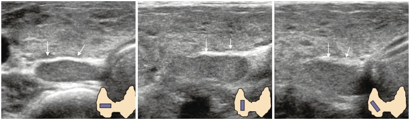
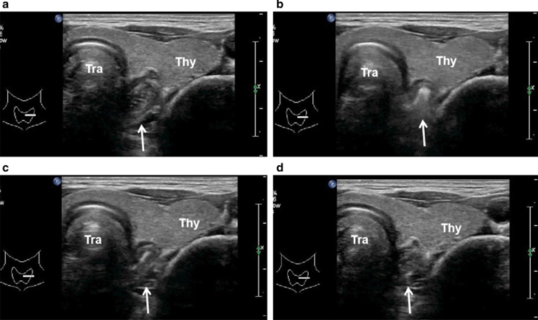

Chapter 03 · Thyroid
무증상 갑상선기능이상
검진 보편화로 무증상 이상은 흔하다(남 6.5%, 여 16.4%). 그러나 한 번의 수치로 치료를 시작하지 않는다. 3개월 뒤 재검해서 판단한다.
01 — FlowTSH가 높을 때
기준의 세부 — 한국 기준과 연령
- 전통적 아급성 저하 기준은 fT4 정상이면서 TSH > 4이지만, 아시아 기준에는 맞지 않는다. 한국 기준으로는 TSH 6.8~10이 mild subclinical hypo, TSH > 10이면 severe subclinical hypothyroidism으로 보고 치료를 시작한다.
- 70세 미만에서는 레보티록신 복용의 심혈관계 혜택이 입증되어 있다. 70세 이상에서 치료 이득이 입증되지 않는 것과 대비된다.
무증상 갑상선기능이상의 빈도
검진이 보편화되면서 무증상 갑상선기능이상은 흔하다 — 남 6.5%, 여 16.4%.
Thyroid
Normal range
검진 보편화로 무증상 갑상선 기능이상은 흔하다 (남 6.5 여 16.4%)
Hypothyroidism
Subclinical Hypo (SCH)
Traditional Subclinical hypo의 기준은 fT4정상이면서 TSH > 4일 때, but Asian 기준으로는 안 맞다 → Korean 기준치는 6.8~10 까지는 mild subclinical hypo, TSH > 10이면 asian이든 아니든 severe subclinical hypothyrodism으로 치료시작.
어떨 때 치료?
- Age < 70 → levothyroxine 복용으로 심혈관계 혜택이 입증됨, 70세부터는 입증 X
Overt hypo
Hyperthyroidism
- Subclinical hyperthyroidism (TSH↓, fT4 ↔)
- Overt hyperthyroidism
Grave's disease(Autoimmune)가 m/c : 핵심 pathophysiology는 TSH Receptor Ab → 갑상선 자극 → H/Thy. Serology에서 TSH-R-Ab (+)에서 Grave's disease, 그게 아니라면? 다른 거 감별 (선종, subacute thyroditis, …)
Tx) Methimazole 혹은 Carbimazole start + Thyroid storm-like Tx (증상조절)
Subacute thyroditis (infection) : "목 통증" + H/Thy가 핵심, TSH-R-Ab는 정상인데 inflammatory marker 상승
Viral infection이 유력한 원인이라고 생각됨 (환절기 ↑), 급성기에 thyrotoxicosis가 약 반수. NSAIDs 먹었는데도 잘 안 나아요 라고 함.
Painless (Postpartum) thyroditis (Autoimmune)
Drug/Food induced (한약, 건기식 등), 갑작스러운 Lab change
여성호르몬 복용 중단 → E2감소 → TBG 감소 → fT4 증가 → thyrotoxicosis 증상 가능
Toxic Nodule
Toxic nodule때문에 증상이 있으려면 2cm 이상 크기여야 함. Small nodule은 Sx 일으킬 가능성 ↓↓
Spongiform이라는 C2 nodule이라도 malignancy risk와 무관하게 fT4를 분비할 "수는 있음".
Thyroid cancer/Nodule - f/u, FNA/CNB or Refer?
Hypoechoic하면 C4 or C5, hyper~isoechoic하면 C3, C2.
PEF : microcalcification with or w/o posterior echo shadowing, "SOLID/HYPOECHOIC"한 곳에 있어야 함. Partially cystic한 곳이라도 solid portion에 있으면 PEF, Cystic한 곳에 있으면 Comet-tail sign.
Calcification - micro (PEF), Macro
PEF : 위 참고
Vascularity?
단, 크기가 작더라도 Extrathyroidal invasion 있다면 적극적인 추가 검사


Nodule margin 이 불확실할 경우도 눌러 보자02 — Numbers기준 정리
| 상황 | 기준 | 판단 |
|---|---|---|
| 정상(전통적) | TSH 0.4~4, fT4 1~2 | 한국인 기준은 다름 |
| 경도 아급성 저하 | TSH 6.8~10 | 대부분 자연 회복, 경과관찰 우선 |
| 중증 아급성 저하 | TSH > 10 | 치료 시작 |
| 고령 | 70세 이상 | 정상 상한 7.5, 치료 권고 안 함 |
| 아급성 항진 | TSH < 0.1 | 65세 이상·골다공증·심질환 → 메티마졸 5 mg |
| 임신 | TSH 0.4~4 | β-hCG 영향으로 생리적으로 낮아짐 |
도플러 소견은 기능과 일치하지 않는 경우가 많다. 신호가 없다고 항진증을 배제하지 않는다. 초음파는 형태(결절) 판단에 쓰고, 기능은 혈액으로 판단한다.
갑상선기능항진 — 감별
- Subclinical hyperthyroidism은 TSH 감소, fT4 정상. Overt hyperthyroidism과 구분한다.
- Graves disease(자가면역)가 가장 흔한 원인임. TSH 수용체 항체(TSH-R-Ab)가 갑상선을 자극하는 것이 핵심 기전임. 혈청 TSH-R-Ab 양성이면 Graves로 진단함. 음성이면 선종·아급성 갑상선염 등 다른 원인을 감별함.
- 치료는 메티마졸 또는 카비마졸 시작 + 갑상선중독증상에 대한 증상 조절.
- 목 통증과 항진 증상이 함께 나타나면 아급성 갑상선염을 의심함. TSH-R-Ab는 정상인데 염증 지표가 상승함. 바이러스 감염이 유력한 원인으로 생각되며 환절기에 증가함. 급성기에 thyrotoxicosis가 약 반수에서 나타남. NSAIDs를 복용해도 잘 낫지 않는다고 호소함.
- 무통성(산후) 갑상선염 — 자가면역.
- 약물/음식 유발 — 한약, 건강기능식품 등에 의한 갑작스러운 lab 변화.
- 여성호르몬 복용 중단 → E2 감소 → TBG 감소 → fT4 증가 → thyrotoxicosis 증상이 가능하다.
중독성 결절
결절 때문에 증상이 나타나려면 2 cm 이상이어야 하고, 작은 결절은 증상을 일으킬 가능성이 낮다. Spongiform C2 결절이라도 악성 위험과 무관하게 fT4를 분비할 수는 있다.
임신 중 갑상선기능 (2023 임신중 갑상선질환의 진단 및 치료 권고안)
E2 상승 → TBG 상승 → free form T4는 낮아지고 binding form T4가 많아지며, 태아 발육을 위해 fT4 요구량은 높아진다.
항진
- 임신 1분기의 TSH 감소·fT4 증가는 흔하고, 대부분은 입덧과 관련된 GTT(Gestational Transient Thyrotoxicosis).
- 일과성 갑상선항진증 — 임신 전반기에 hCG에 의해 일시적으로 TSH 감소, fT4 증가. 대증치료 1~2개월 후 lab 추적.
- Graves — thyrotoxicosis에 TSH-R-Ab 양성. 임신 중 발생하면 PTU <100 mg/day 등 저용량으로 시작한다.
저하
- fT4 감소 또는 정상 + TSH 상승.
- Overt hypo는 fT4를 보충하고 목표 TSH < 2.5로 잡는다.
- 항체 양성이면서 갑상선기능이 정상이면 유산·조산 방지 목적의 LT4 공급은 권장되지 않는다. 다만 반복유산 여성에서는 고려된다.
결절 — 초음파 소견과 FNA/CNB
- Hypoechoic하면 C4 또는 C5, hyperechoic~isoechoic하면 C3, C2.
- PEF(punctate echogenic foci) — microcalcification ± posterior echo shadowing. SOLID/HYPOECHOIC한 곳에 있어야 PEF이고, partially cystic한 병변이라도 solid portion에 있으면 PEF, cystic한 부위에 있으면 comet-tail sign.
- 석회화는 micro(PEF)와 macro로 나눈다.
- 크기가 작더라도 extrathyroidal invasion이 있으면 적극적인 추가 검사를 한다.
출처: 원노트 Endo 학회 정리 (2026-09-10) — 갑상선기능 파트.
임신 시 갑상선기능 (2023 임신중 갑상선질환의 진단 및 치료권고안)
임신 중 정상적으로 어떻게 변하는가?
E2↑ → TBG는↑ → free-form T4는 낮아지고 binding form T4는 많아짐, fT4 needs는 높아짐 (태아발육)
임신 중 갑상선기능 항진 - Graves disease, GTT (Gestational Transient Thyrotoxicosis)
TSH↓, fT4 ↑ ; 임신1분기에 이러한 change는 흔하다. 대부분은 입덧과 관련된 GTT.
일과성 갑상선항진증 - 임신 전반기에 Transient하게 TSH감소, fT4증가, d/t hCG. 대증치료 1~2개월, lab f/u
Graves - thyrotoxicosis with lab change + AutoAb (+, TSH-R-Ab)
임신 중 생긴 경우 → PTU <100mg/day 등 저용량
임신 중 갑상선기능 저하
fT4 ↓ or ↔ + TSH ↑
Overt hypo: fT4 보충! Target TSH < 2.5
현재 guideline : Ab (+)면서 정상갑상선기능이라면 유산/조산방지목적 LT4 supply는 권장되지 않는다. 다만, 반복유산 여성에게는 고려됨